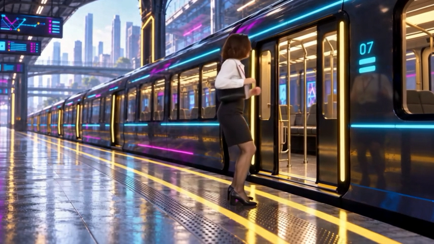

1708×960,24fps,289frames. Same accepted performance. Requested2.25× was returned as2×. This is AI-enhanced480p source, not native1080p.

606credits / ₹8.80. Original24fps and frame count retained. Fine details remain limited by the original image.